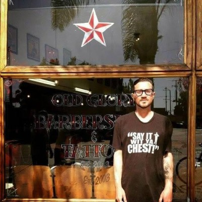
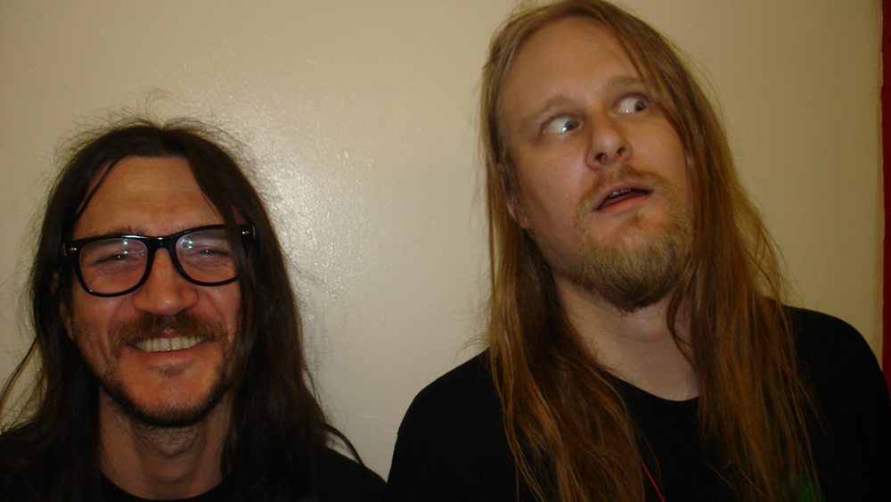
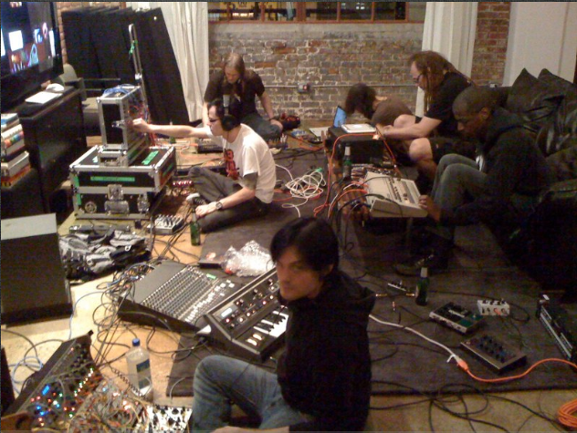

Trickfinger: Uwolnienie – Resident Advisor, 05 2015
Matt McDermott wysłuchał tego, jak gitarzysta Red Hot Chili Peppers odnalazł nowe życie wśród syntezatorów.
Coś niesamowitego dzieje się kiedy w Internecie pojawia się jakakolwiek wzmianka o Johnie Frusciante. Pojawiają się setki alertów Google, a redaktorzy fanpage`y wchodzą w najwyższy stan gotowości. Frusciante wzbudził ten nienasycony kult jako artysta solowy i jako członek najbardziej kalifornijskiego z zespołów – Red Hot Chili Peppers. Po narkotycznym, mrocznym okresie życia (udokumentowanym w boleśnie szczegółowym fimie Johnny`ego Deepa ‘Stuff” z 1993 roku), kiedy to opuścił Chili Peppers, zaliczył odwyk i wrócił do zespołu. Potem opuścił go jeszcze raz, by zachować swą artystyczną integralność.
Frusciante rzucił się w świat klasycznej „maszynerii” do tworzenia muzyki tanecznej. Po utworzeniu wraz z Venetian Snares projektu nazwanego Speed Dealers Moms oraz wydaniu całej masy solowych i kolaboratywnych płyt, ogłosił największy jak dotychczas zwrot: album z analogową muzyką taneczną, wydany przez Acid Test, wytwórnię mocno skoncentrowaną na artystach techno, takich jak Tin Man czy Donato Dozzy. Zatytułowana „Trickfinger” miała nigdy nie ujrzeć światła dziennego. „Oryginalna wersja tych piosenek była częścią prezentu świątecznego, który John zrobił swoim bliskim przyjaciołom w 2008 roku.” – wyjaśnia Oliver Bristlow, właściciel Acid Test. To pokaz wirtuozerii, którą doświadczony producent z LA, John Tejada wyjaśnia w następujący sposób. „To, z czego myślę niewielu ludzi zdaje sobie sprawę, to fakt, że „Trickfinger” został zrobiny całkowicie na syntezatorach Rolanda, bez pomocy komputera. To liczne sprzężone z sobą 303 i 606 – w sposób jaki wykorzystywano przy klasycznych nagraniach acid. Jednak żadne z tych nagrań nigdy nie nie miało aranżacji na takim poziomie, z wykorzystaniem tak wielu instrumentów. To imponujące dokonanie.” W zalanym słońcem pokoju niedaleko plaży w Los Angeles otoczony płytami, syntezatorami i papierosami Frusciante objaśnia nieprawdopodobny zwrot w swojej karierze.
Uwielbiam notkę, która napisałeś na swoją płytę. Uważam, że jest niezwykle interesująca jeśli chodzi o objaśnienie metodologii.
Spędziłem trzy lata tworząc i ucząc się zanim zdecydowałem się ponownie wydawać muzykę. Przy okazji tej pierwszej rzeczy, która wyszła, po prostu przygotowałem wyjaśnienie tego, co stało się w ciągu tych lat. Absurd Recordings po prostu przygotowało z tego strzeszczenie i opublikowało go na wkładce płyty.
Opuściłeś swój stary zespół i byłeś zainteresowany innymi rodzajami muzycznej komunikacji. Myślę, że idea zaczynania wszystkiego od podstaw, też była dla Ciebie bardzo atrakcyjna.
Myślę, że w tamtym czasie miałem w głowie rodzaj choroby standardowej w popowej i rockowej muzyce, gdzie jako muzyk nie czujesz się i nigdy właściwie nie będziesz inżynierem dźwięku. Nie możesz nigdy stworzyć znakomicie brzmiącej płyty bez zatrudniania zespołu profesjonalistów i wchodzenia do wielkiego studia. Domowe studio nigdy nie będzie brzmiało tak dobrze jak wielkie, kosztowne studio naganiowe. Miałem to totalnie błędne rozumienie związku między muzyką, a obróbką dźwięku. Przypuszczam, że na wielu polach. Widziałem, że perkusja bardziej rozwija się dzieki programistom, niż dzięki perkusistom. Dostrzegałem nowe rodzaje melodii, które mógłbyś wymyślić tylko wtedy, kiedy cos programujesz, a nie wtedy kiedy grasz to własnymi palcami. Widziałem, że tacy ludzie jak Autchere i Squarepusher podnoszą inżynierię dźwięku do poziomu artystycznej ekspresji – nieosiągalnego dla profesjonalistów z branży. Pracowałem ze znakomitymi inżynierami dźwięku, ale oni nie byli artystami: byli po prostu gośćmi nauczonymi, by nie popełniać pomyłek i „nie spieprzyć czegoś” – to była ich filozofia. Z takim podejściem nie możesz być artystą. Widziałem, co dzieje się w muzyce elektronicznej, która wówczas bardzo intensywnie się rozwijała, w ten sam sposób co muzyka instrumentalna w późnych latach 60. i w latach 70. W końcu zdałem sobie sprawę, że słyszę w swojej głowie muzykę, o której nie wiem jak ją stworzyć. Słyszałem, że naprawdę wolne riffy w typie Black Sabbath brzmiały by dobrze z szybkimi break beatami – ale nie słyszałem nigdy nikogo łączącego coś superwolnego z superszybkim w ten sposób. Słyszałem w mojej głowie jak by to współgrało, ale wiedziałem, że dzieli mnie wiele czasu od momentu, gdy będę w stanie zrobić coś takiego. Uważałem, że osiągnąłem szczyt swoich możliwości w tradycyjnej muzyce rockowej i chciałem nauczyć się myśleć w taki sposób jak ci eletroniczni producenci i zrobić to, co było w mojej głowie – te muzyczne formuły, które słyszałem.
Acid był dla mnie początkiem drogi uczenia się myślenia o muzyce w kategoriach raczej liczb, niż fizycznego ruchu. Liczby były już ważną częścią mojego podejścia do gry na gitarze, ale zastosowanie ich do rytmu było dla mnie innym sposobem myślenia. Trzy lata później byłem w stanie łączyć naprawdę szybki breakbeat z sabatowymi riffami. Potem minęły kolejne dwa lata zanim w ogóle zacząłem korzystać z sampli. Czułem, że potrzebuję kilku lat ćwiczeń, by zrozumieć programowanie, zanim mogłem przeskoczyć do cięcia breakbeatów.
STRACIŁEM ZAINTERESOWANIE TRADYCYJNYM PISANIEM PIOSENEK I BYŁEM PODEKSCYTOWANY MOŻLIWOŚCIĄ ZNALEZIENIA NOWYCH METOD KREOWANIA MUZYKI.
Ostatni utwór na płycie Trickfinger ma subtelne wokalne sample, które brzmią jak wczesne nagrania rave Armanda Van Heldena.
To były pierwsze kroki. Do pewnego momentu przymuszałem się do tego. Miałem sen, w którym słyszałem utwór muzyczny w całości złożony z sampli zespołów rockowych, jedna grupa po drugiej, ale był on całkowicie abstrakcyjny.
Wyrażanie się bez pomocy maszyn i korzystanie wyłącznie z sampli, było moim celem przez pewien czas. W muzyce rockowej, podczas gry na tradycyjnym instrumencie, twój umysł każe coś zrobić, a ty rozkazujesz swoim rękom zrobić to.W przypadku samplowania i korzystania z starych Rolandów, naprawdę możesz nie mieć pojęcia dokąd zmierzasz i nie mieć żadnych uprzednio poczynionych założeń. Wolę to, ale początkowo jest to przerażające. Nie dbam o rezultat, po prostu robię to i opanowałem wystarczająco ten proces, by mu ufać. W jaki sposób on się zakończy nie jest to dla mnie istotnym problemem.
Czy wychodząc z bardzo popularnej grupy łatwo jest kompletnie nie brać pod uwagę swojego ego, oddać kontrolę i uczynić swoją pracę jak najmniej „o mnie” jak to jest możliwe?
Celem jest nauka, a nie bycie częścią jakiejś sceny, wywieranie wrażenia na ludziach czy cokolwiek innego. Samokształcenie jest czymś, od czego jestem uzależniony od 12 roku życia – zawsze postrzegałem naukę jako nagrode samą w sobie. Czasami to trwało wiele lat, tak jak ukształtowanie sposobu w jaki pracuje mój umysł. Spędziłem całe życie zapamiętując muzyke z płyt. W ciągu kilku ostatnich lat całe moje życie było skoncentrowane na nauce muzyki elektronicznej, od robienia acid house, po samplowanie. Stopniowo gromadzę tę całą broń w moim arsenale. Teraz sample to dla mnie najbardziej naturalna rzecz na swiecie, chociaż wcześniej było to to dla mnie niepojęte, nauczyłem się stopniowo jak łączyć różne muzyczne style – nawet takie, których przedtem nigdy nie słyszałem połączonych i otwierać swój umysł na uczenie się muzyki pod tym odmiennym kątem. Poznawałem muzykę w sposób korelujący z samplowaniem. Prz samplach zaczynasz analizować mikrorytmy i muzykę pomiedzy nutami, która w innych przypadkach jest trudna do zrozumienia. Przedmiotem moich badań stała się nieregularność, która tworzy groove oraz przyspieszanie i zwalnianie tempa – rzeczy, których nie możesz naprawdę zrobić jako zwykły muzyk. Prawie wszystko, co zrobiłem w ciągu ostatniego roku opierało się na samplach z muzyki klasycznej. Pociąłem 5 minut muzyki klasycznej na 150 „plasterków” i robię z nich muzykę, a potem badam, co w niej się kryje przy pomocy syntezatora lub gitary i tworzę linię basu. Ale nie robię swojej własnej, tylko robię taką „wyprogramowaną” z Chopina. Tyle, że progresja akordów jest w niej moja, nie Chopina. Używam swojej songwriterskiej części umysłu, kiedy piszę muzykę. To jest własnie to, co robię gdy wyciągam gitarę i gram do wtóru muzyce. Nie myślę o nowych częściach – uczę się ich. Potrafię napisać rzeczy, których normalny człowiek nigdy nie napisze, bo jego mózg nie będzie w stanie ich zapamiętać. To jest odwrócony inżynieryjny proces pisania muzyki. Stopniowo doszedłem do tego, że postrzegam pracę, którą robię jako ktoś, kto siedzi z gitarą i gra do wtóru płytom, jako „drugą stronę” tego co robię kiedy tworzę muzykę elektroniczną. Sam pomysł, że któregoś dnia mój umysł będzie mógł w ten sposób działać był dla mnie magicznym snem, który powoli zamieniłem w rzeczywistość.
To naprawdę eksperymentalna muzyka, bo do pewnego stopnia nie wartościujesz tego czy osiagniesz dobry czy zły rezultat – pokładasz wiarę w proces.
Myślę, że talent to coś, z czym ktoś się rodzi i jeśli ten ktoś pracuje, by uczyć się cały czas, daje temu talentowi szansę rozkwitnięcia. Jeśli nie ćwiczysz, nie badasz, nie uczysz się, jeśli się nie zmieniasz i nie rozwijasz, możesz mieć niebywały talent, ale jeśli powiesz sobie „Chcę, by ludzie to lubili, mam nadzieję, że mogę polegać na fanach, których już zdobyłem.” to będzie to marnotrawstwo twojego talentu.To jedna z tych smutnych rzeczy, które obserwowałem nieustannie wokół siebie w muzyce rockowej – ludzi skoncentrowanych na autopromocji, pochlebianiu publiczności i konkurowaniu z innymi popularnymi grupami.Kiedy do cholery tacy ludzie mają mieć czas by być coraz lepszymi i pielęgnować swój talent? Nawet na podziemnej scenie kiedy ktoś staje się dobrze znany w jakimś środowisku, publiczność staje się jego autorytetem, a on dokonuje swoistej „edycji” samego siebie.

Robiłem to, kiedy byłem w moim zespole i to była moja praca. Do pewnego stopnia oczywiście chcesz robić muzykę, którą lubisz, ale robisz ją w granicach tego, co jest gotowa zaakceptować twoja publiczność. W pewnym momencie miałem tego dość, bo robiłem to wystarczająco długo, by w końcu mieć swoje życie. Tak więc od 7 lat korzystam z tego w pełni.
NIE ROBIĘ MUZYKI, BY USZCZĘŚLIWIAĆ LUDZI CZY BY SPRAWIAĆ IM PRZYJEMNOŚĆ. ROBIĘ MUZYKĘ W CELU NAUCZENIA SIĘ CZEGOŚ I ZAWSZE DĄŻĘ DO OSIĄGNIĘCIA CZEGOŚ, CZEGO WCZEŚNIEJ NIE OSIĄGNĄŁEM.
To byłoby naprawdę żałosne, gdybym znienacka pomyślał „Fani acid house mnie lubią, więc będę teraz robił acid house.” Nie mogę nigdy tak zrobić – po prostu muszę iść do przodu i zmieniać się.Nie sądzę, by nasza branża miała miejsce dla ludzi, którzy myślą w ten sposób, więc była to tylko kwestia porzucenia wszelkich wyobrażeń o byciu sławnym muzykiem. Ich pragnienia są przeciwieństwem tego, czym muzyk oddany swojej pasji jest faktycznie – chcą słyszeć coś znajomego, sprawdzonego, a jako muzyk z przekonania chcesz zrobić coś, czego nikt jeszcze nie zrobił.
To jest jedna z tych rzeczy za które uwielbiam Apex Twin, Venetian Snares czy Squarepushera. W porównaniu z muzykami rockowymi wydają się znacznie bardziej skupiać na muzyce, a nie gromadzić fanów i promować się tak bardzo, jak to tylko możliwe. Chciałem takiej samej intelektualnej wolności dla siebie.
Opowiedz mi o tym jak tworzyłeś swoje domowe studio i jak ustawiałeś sprzęt na potrzeby albumu.
Doszedłem do momentu, że miałem tak wiele instrumentów elektronicznych wokół siebie, że moje koty nie mogły się do mnie dostać i słyszałem tylko ich miauczenie po drugiej stronie, więc musiałem zrobić im choć trochę miejsca na przejście. Album był nagrany na wypalarce CD – bez komputera. Jeden 909 był głównym instrumentem, a pozostałe pełniły służebną rolę. Moje domowe studio bardziej przypominało układem studio rockowe, gdzie konsola jest w jednym pomieszczeniu, a instrumenty w innym. Zacząłem wymontowywać sprzęty z rockowego studio i ustawiać je w elektronicznym studio. Myślałem na początku, że będą to po prostu dwa oddzielne studia, ale w końcu zdałem sobie sprawę, że nigdy więcej już tego nie chcę – nie chcę zatrudniać inżyniera dźwięku.Skończyłem album, który robiłem, ale moje elektroniczne studio zajmuje teraz połowę pomieszczeń. Obecnie jest zaaranżowane zupełnie inaczej. Gram na bębnach z komputera, na sprzężonych syntezatorach z komputera. Nawet nie wiem czy używałem sprzężonych syntezatorów tworząc acid. Pewne rzeczy są takie same – ciągle programuję Monomachine (Elektron) lub Machinedrum lub 606 (Roland TR). Mam jeden w którym wszystkie wyjścia zostały zastapione złączami. Sa pewne automaty perkusyjne, które programuję , ale do większości utworów mam ścianę automatów perkusyjnych, które programuję tylko z komputera. Więc teraz wszystko jest naprawde dobrze ustawione, a do każdej piosenki (z albumu) wszystko było zmieniane i rozmontowywane po nagraniach.
Niektóre z ścieżek automatu perkusyjnego i wypełnień w „Sain” są na poziomie złożoności IDM. (Intelligent Dance Music – przyp. tłum)
W przypadku „Sain” zaprogramowanie bębnów zajęło mi około dwóch tygodni, resztę zrobiłem w jeden dzień. Te bębny zrobiłem w całości na R-8. Kiedy słucham tych acid`owych kawałków, myślę, że ich częścią było to, że musiałem tak ciężko pracować, by stworzyć niektóre z nich. Robienie muzyki elektronicznej przez pierwsze trzy lata było dla mnie prawdziwym wyzwaniem i to było przyczyna tego, że nie wydawałem muzyki. Lubię zmagania, lubię stawiać takie wyzwania swojemu umysłowi. Ale miałem nadzieję, że pewnego dnia tworzenie tej muzyki będzie dla mnie tak proste, jak było dla Aarona Funka – w naszej wspólnej pracy on był po prostu znacznie szybszy, niż ja.
Jak spędzisz najbliższe 2 tygodnie?
Nie ma nic szczególnego na czym miałbym spędzić 2 tygodnie (śmiech). Ale wracając do tematu to może być cokolwiek: ścieżka na Monomachine, ścieżka na Machinedrum lub na R-8. Teraz jak sądzę, mogę osiągać rezultaty naprawdę szybko. To fajne móc robić muzykę szybko.
Ty i Aaron Funk macie jakieś 40 czy 50 godzin wspólnie nagranego materiału.W jaki sposób związałeś się z nim?
Fajną sprawą było nawiązanie znajomości z ludźmi, którzy wyrośli na techno, industrial i jungle. Kiedy robiłem swoje acidowe nagrania, miałem tylko kumpli rockmenów. To było uspokajające mieć przyjaciół, którzy nie myślą w ten sposób i dorastając chodzili na rave`y; to mnie utwierdziło w pewien sposób, że robienie muzyki po prostu: nie dbając o jej wydawanie, czy o to, czy innym wydaje się to sensowne. Zrobiliśmy razem tyle muzyki i mieliśmy nastawienie „Nieważne jak to do cholery będzie brzmiało dla kogokolwiek poza nami.” To świetne mieć takiego współpracownika, to bardzo rzadkie. Wiekszość ludzi w chwili, gdy coś zaczyna wychodzić, zaczyna ci mówić, co o tym pomyślą inni ludzie i to jest naprawdę wkurzające, więc współpraca z Aronem była świetna.

Przywykłem do takiej pracy z ludźmi, kiedy macie wspólny cel, kiedy robicie razem płytę, kiedy pojawiasz w miejscu, gdzie masz się pojawić o określonej porze. Ja zawsze zostawałbym dłużej. Mieć kogoś jeszcze, kto chce pracować ciągiem 14-15 godzin – nie tak łatwo znaleźć zawodowego muzyka, który chciałby tak długo siedzieć w studio. Ale z Aaaronem nasze godziny pójścia spać przesuwały się coraz później i później. Budzilibyśmy się o 8 wieczorem. Mieszkaliśmy razem przez 2 tygodnie za każdym razem, gdy robiliśmy sobie sesję, więc kończyło się to tym, że muzyka była spoiwem naszego wspólnego życia, a nie czymś oddzielonym od niego. To było dla mnie czymś świeżym. Szczególnie kiedy jest to twoja własna płyta , czujesz jakbyś narzucał się innym. Jakbyś trzymał ich z daleka od domu lub od knajpy, gdzie mają ochotę iść, czy coś w tym rodzaju.

Dziś, gdy mam już tyle lat, ile mam, wydaje mi się, że jeśli ludzie naprawdę kochają robienie razem muzyki, powinni również kochać przebywanie ze sobą jako ludzie, i że muzyka powinna wynikać z ich przyjaźni. To nie powinno być tak, że przyjaźń wynika z tego, że z kimś grasz. Powinno być na odwrót, ale tak właśnie było w moim starym zespole – nie siedzieliśmy razem, nie wychodziliśmy razem, nie słuchaliśmy płyt, ani nic z tych rzeczy
Czy wspólnotowy aspekt występów na żywo jest czymś, co Cię interesuje?
Byłem na występach Autechre, gdzie ludzie tańczyli, ale byłem też na takich, gdzie siedzieli na podłodze z głowami w dłoniach. Mam przyjaciół tu w Los Angeles, którzy organizują rave`y, ale mnie nigdy nie ciągnęło, by to robić. Sądzę, że to z powodu grania tak długo, tak wiele razy na żywo, wejście na scenę i bawienie tłumu jest dla mnie takie odległe. Aaron i ja próbowaliśmy to zrobić parę razy, ale wyglądało to tak, jakby niebiosa sprzysięgły się, by tak się nie stało. Granie na żywo zupełnie mnie nie interesuje. Zdecydowanie zaliczyłem już swoją dawkę tego. Występowanie jest dla mnie po prostu odstręczające. Doceniam ideę bycia na scenie i ludzi odpowiadających swoimi ciałami na muzykę. Lubię być tego częścią, ale z perspektywy widowni. Na festiwalu ATP, którego kuratorem był Autechre, a Apex Twin headlinerem –można było odnieśc wrażenie, że wszyscy na sali są pod wpływem ecstasy, że jesteś jednością z każdą osobą dookoła. On był mistrzem na scenie, my byliśmy jego tworzywem. Doznawałem takiego uczucia w klubach jungle i na rave`ach, ale naprawdę wolę być po tej drugiej stronie.
Wygląda na to, że przyciągają Cię ludzie w typie samotnego geniusza, którzy funkcjonują w swojej własnej przestrzeni. Ale jednocześnie współpraca też wydaje się dla Ciebie bardzo ważna.
Kiedy zacząłem robić acid, myślałem, że przestanę tworzyć muzykę z innymi ludźmi. Nie przypuszczałem,że zaprzyjaźnię się z kimś takim jak Aaron – po prostu myślałem, że mam dość pracy z innymi ludźmi. Nie wiedziałem, że może istnieć współpraca, w której obie strony odpowiadają swojej wyobraźni i są pewne na tyle swoich pomysłów, by nie pytać co chwila „Co o tym myślisz? Czy to wystarczająco dobre?”
GENERALNIE JEDNAK MYŚLĘ, ŻE NAJWAŻNIEJSZE ODKRYCIA I IDEE, KTÓRE STWORZYŁ RODZAJ LUDZKI, WYSZŁY OD INDYWIDUALNOŚCI – LUDZI, KTÓRZY NIE OBAWIAJĄ SIĘ TEGO, CO O NICH POMYŚLĄ INNI I MAJĄ RODZAJ WEWNĘTRZNEGO KOMPASU W SWOIM UMYŚLE ORAZ POTRAFIĄ NAKAZAĆ PRZEDMIOTOM, BY ICH SŁUCHAŁY, NIEZALEŻNIE OD NIEBEZPIECZEŃSTW, KTÓRE MOŻE TO NA NICH SPROWADZIĆ, OD LUDZI, KTÓRZY CHCĄ ICH ZABIĆ LUB SIĘ IM SPRZECIWIĆ.
Myślę, że to bardzo ważne dla ludzi kierować się swoim wewnętrznym przeczuciem i nie pozwalać sterować sobą światu zewnętrznemu. Dla mnie pozwolenie otoczeniu na kierowanie sobą, to jak bycie niewolnikiem. Myślę, że ludzie, którym powinniśmy dziękować za jakikolwiek postęp rodzaju ludzkiego to liderzy, ludzie bezkompromisowi, spędzający czas na rozwijaniu swojej wyobraźni, nie obawiający się być samotnymi i odmiennymi.
Kiedy dokonałem tego przejścia do tworzenia muzyki elektronicznej czytałem wiele Alistera Crowleya i wszystkie te książki Thelemy – one wszystkie są o działaniu zgodnie z własną wolą. I oglądałem takich ludzi jak Aaron, Autechre czy Richard D. James – muzycznie wydawało się, że ich życie i filozofia jest w całkowitej korelacji z tym, o czym czytałem w książkach Thelemy. Ludzie wokół mnie myśleli, że wypełniam własną wolę, bo publiczność reagowała żywiołowo kiedy grałem na gitarze, ale wcale tak nie było.
Dostrzegłem w elektronicznej muzyce możliwość stworzenia w jednoosobowym składzie całego utworu muzycznego. Tego rodzaju możliwości mieli tylko klasyczni kompozytorzy. Cofając się do momentu, gdy to oni przewodzili rozwojowi muzyki, można stwierdzić, że jeden człowiek dyktował 150 osobom, co mają robić. Teraz jest to możliwe bez mówienia komukolwiek co ma robić: ja nie lubię mówić ludziom, co mają robić i nie lubię, gdy ktoś mi mówi, co ja mam robić. Mówienie ludziom co robić wydaje się najgorszą rzeczą, którą możesz zrobić sam sobie, ale jeśli chodzi o maszyny nie tracisz niczego kierując nimi. Unikasz też rozczarowań jakie mógłby mieć kompozytor z powodu muzyków, którzy nie grają w sposób, w jaki on to słyszy w swojej głowie.
Ludziom coraz ciężej jest zrozumieć, jak być dobrym przywódcą. Postrzegam muzykę elektroniczną jako obszar, gdzie masz swobodę bycia mistrzem i liderem, a nie masz tych wszystkich komplikacji, które powstają, kiedy musisz przewodzić istotom ludzkim.
Rozmawiał: Matt McDermott
Źródło:www.residenadvisor.net
Tłumaczenie: Wanda Modzelewska